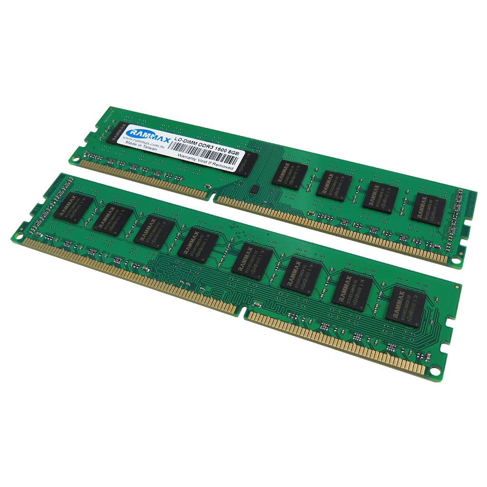

|
|
| FORM PEMBELIAN KOMPUTER DISINI!! |
Random Access Memory
|
RAM, atau Random Access Memory, adalah jenis memori komputer yang berfungsi sebagai tempat penyimpanan data sementara yang dapat diakses secara langsung oleh prosesor. RAM berperan penting dalam menjalankan aplikasi dan proses yang sedang aktif karena memungkinkan data untuk diakses dengan cepat, yang meningkatkan kinerja sistem secara keseluruhan. Ketika Anda membuka program atau file, data tersebut dimuat ke dalam RAM agar prosesor dapat mengaksesnya dengan cepat dan efisien. Keuntungan utama dari RAM adalah kecepatannya yang tinggi dibandingkan dengan media penyimpanan lainnya seperti hard disk drive (HDD) atau solid-state drive (SSD). RAM memungkinkan akses langsung ke data tanpa memerlukan waktu pencarian yang lama, yang sangat penting untuk multitasking dan menjalankan aplikasi berat seperti perangkat lunak pengeditan video atau permainan komputer. Namun, karena sifatnya yang volatil, data dalam RAM akan hilang saat komputer dimatikan atau restart. Ukuran RAM mempengaruhi seberapa banyak aplikasi dan proses yang dapat berjalan secara bersamaan tanpa mengurangi kinerja sistem. Semakin besar kapasitas RAM, semakin banyak data yang dapat disimpan dan diakses secara bersamaan, yang memungkinkan komputer untuk menjalankan lebih banyak aplikasi secara efisien. Oleh karena itu, memilih kapasitas RAM yang sesuai dengan kebutuhan komputasi Anda adalah salah satu faktor penting dalam membangun atau meng-upgrade sistem komputer. |
 |